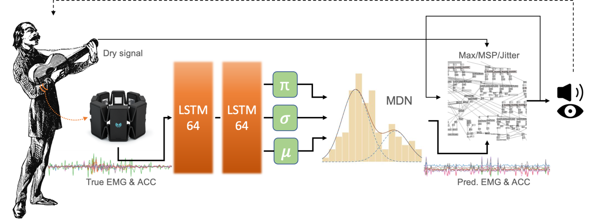
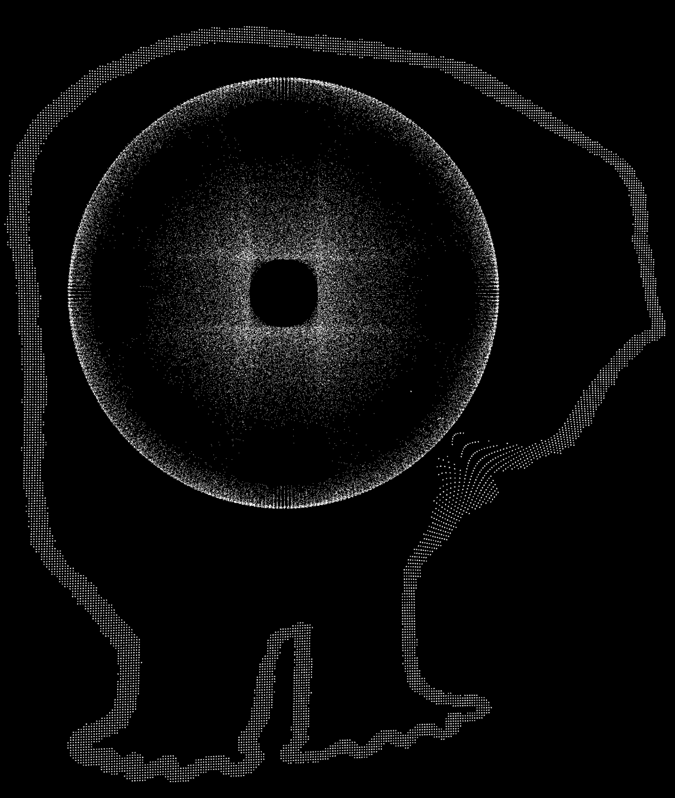
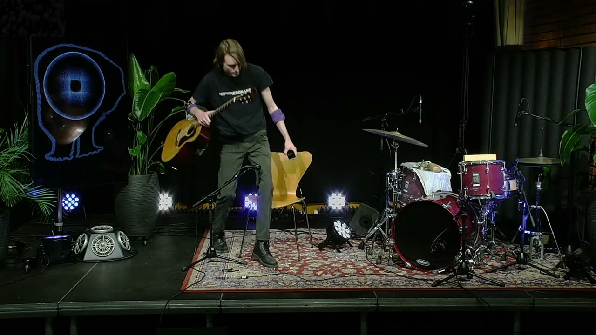

Me & My Musical AI "Toddler"
Project Description
This performance features the coadaptive audiovisual instrument CAVI for collaborative human-machine improvisation. The system details are presented in a related paper submission for this year’s NIME, entitled “CAVI: A Coadaptive Audiovisual Instrument–Composition” [1]. Briefly, CAVI tracks muscle and motion data of a performer's actions and uses deep learning to generate control signals used in a live sound processing system based on layered time-based effects modules. In addition, CAVI also has a virtual body that is present visually on stage (Image 1).

CAVI on stage during a performance in Oslo in 2021. It is physically presented through a TV monitor and a hemispherical speaker placed on the left side of the stage (Photo: Annica Thomsson).
The artistic motivation of the project is related to how elements of surprise can emerge between a human performer and a computer-based musical agent. We explore this through CAVI, which builds on a dataset collected in a previous laboratory study of the sound-producing actions of guitarists [2]. The particular dataset used in this project consists of electromyogram (EMG) and acceleration (ACC) data of thirty-three guitarists playing a number of basic sound-producing actions (impulsive, sustained, and iterative) and free improvisations. In the performance setup, CAVI continuously monitors the data streamed from a Myo armband located on the right forearm of the guitarist, which consists of 4-channel EMG and 3-channel ACC data. These data streams are used to generate new control signals akin to what will likely come next (Image 2).


A simplified diagram of the signal flow through the multidimensional recurrent neural network (MDRNN) of CAVI. The model receives EMG & ACC from the Myo armband (left). The MDRNN outputs the mixture distribution parameters, from which a new window of EMG & ACC data is sampled. The generated data is sent to a patch in Max/MSP/Jitter that generates the visuals and processes the acoustic instrument sound through several EFX modules. The Max patch also encapsulates the rule-based structure within which CAVI continuously tracks the audio outputs and makes the necessary adjustments.
CAVI is concerned with (1) how musical agents can interact with a performer’s body motion and (2) how artists can diversify performance repertoires using AI technologies. This results in serendipitous performances, based on the interaction between the human guitarist and the artificial agent. Video 1 is a recording of the premiere of CAVI in 2021, featuring a human performer that had little experience with the system prior to the concert. For this NIME performance, CAVI’s creator will perform with the system, using improved mappings, model optimization, sound mix, and spatialization. We will also include the Self-playing Guitars that were presented as part of an online installation, Strings On-Line, during NIME 2020 (Video 2). In doing so, we aim to address this year’s special call for music option, “NIME with a story,” and enhance the piece’s multi-agent structure using acoustic guitars that interact with the environment autonomously via Bela boards, actuators, and sound and motion sensors. Thus, the final performance setup will comprise an electric guitarist human performer, a virtual agent responsible for live sound processing, and six self-playing guitars.
Type of submission
“New NIME” - traditional NIME music sessions aimed at showcasing pieces performed or composed with new interfaces for musical expression.
NIME with a story - dedicated to NIMEs that have been presented before.
Program Notes
Imagine playing your electric guitar through effects pedals while someone else is tweaking the pedal knobs. What if that person was a toddler with limited motor abilities and without a deeper understanding of your musical intentions. Would you be annoyed or waive the control and enjoy playing together?
CAVI is a coadaptive audiovisual instrument based on artificial intelligence (AI). It generates its own control signals based on muscle and motion data of the human performer's actions. The generated control signals automate the live sound processing of the human performer’s instrumental sound. CAVI also manifests through an animated virtual body. For this NIME performance, CAVI’s creator will perform with the system. The performance will also feature the Self-playing Guitars that were used in an interactive installation during NIME 2020. These guitars interact with the environment autonomously through onboard computers, sensors, and actuators.
CAVI is still developing and learning, and its capabilities can at the moment best be described as a musical AI “toddler.” Its emerging human-machine interactions cruise on the limits between enriching vs. competing. The main drive is to challenge the guitarist’s embodied knowledge and musical intentions. CAVI aims to invite the NIME audience to rethink this year’s theme, “decolonizing musical interfaces,” through an instrument–composition that breaks with the traditional Western notions of authorship and control in music composition and performance.


“The virtual embodiment Say Hi to CAVI. Perhaps you get a blink in return.”
Video

▶The premier performance of CAVI with guitarist Christian Winther.
 ▶
▶Strings On-Line: The interactive art installation that was presented during NIME 2020.
Ethics Statement
The training dataset of CAVI was collected through a series of recording sessions as part of an experiment for an ongoing study. We recruited participants through an online invitation published at the University of Oslo and announced the experiment in various communication channels. Such a recruitment method had some consequences. The diversity of participants was limited to whoever volunteered. Unfortunately, we only had one female participant. In addition, the recruitment award (a gift car worth approx. €30) did not appeal to professional musicians. The thirty-six participants who took part in the study were primarily semi-professional musicians and music students. CAVI is built on the idea of predicting the performer’s next move. However, such dataset limitations should be considered obstacles to generalizing the statistical results.
Before conducting the experiments, we obtained ethical approval from the Norwegian Center for Research Data (NSD), Project Number 872789. The datasets and codes for running all experiments have been released online. That makes the work comply with open access and open data principles.
Acknowledgments
This work was partially supported by the Research Council of Norway (project 262762) and NordForsk (project 86892).
Citations
- ↩Erdem, C., Wallace, B., & Jensenius, A. R. (2022). CAVI: A Coadaptive Audiovisual Instrument–Composition. Proceedings of the International Conference on New Interfaces for Musical Expression.
- ↩Erdem, C., Lan, Q., & Jensenius, A. R. (2020). Exploring relationships between effort, motion, and sound in new musical instruments. Human Technology: An Interdisciplinary Journal on Humans in ICT Environments, 16(3), 310–347. https://doi.org/10.17011/ht/urn.202011256767